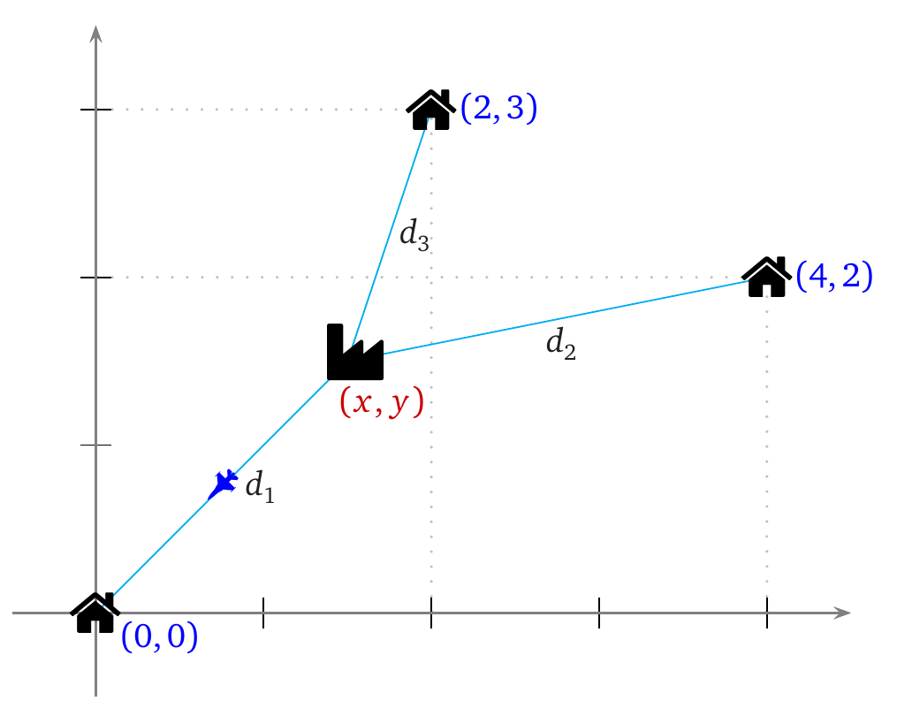
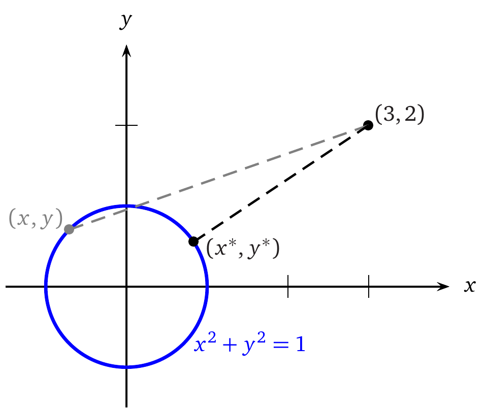
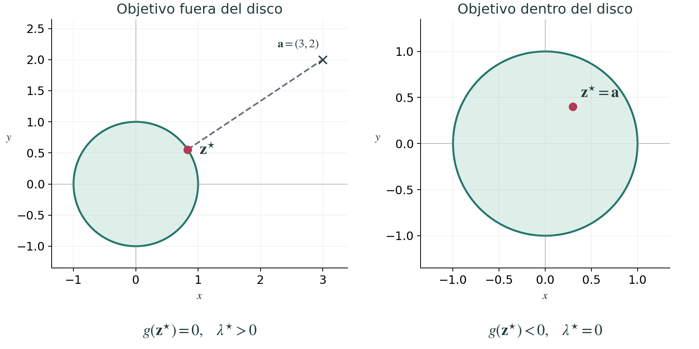

Tutorial
Optimización matemática: objetivos, restricciones y soluciones
Cómo convertir una decisión de ingeniería en un problema matemático, entender su geometría y resolverlo con MATLAB y Python
Optimizar significa elegir la mejor alternativa de acuerdo con un criterio explícito y dentro de un conjunto de posibilidades admisibles. Esa idea aparece al dimensionar un mecanismo, ajustar un modelo a mediciones, distribuir recursos o calcular la acción de un controlador. Este tutorial desarrolla esa elección paso a paso. Primero se busca dónde ubicar una fábrica sin imponer límites a su posición; después se estudia qué cambia cuando el punto elegido debe permanecer sobre una circunferencia o dentro de un disco. Cada ejemplo permite introducir las herramientas matemáticas necesarias para decidir, justificar la respuesta y reconocer sus límites. Finalmente, el reparto de corriente entre dos actuadores reúne esas herramientas en un problema de ingeniería con una solución analítica y programas reproducibles en MATLAB y Python.
Antes del algoritmo está la decisión
Una fuente de alimentación puede resultar insuficiente para satisfacer simultáneamente las demandas de dos motores. Reducir ambas corrientes en la misma cantidad parece razonable, pero quizá uno de los movimientos sea más importante que el otro. Otra opción sería atender por completo al primer motor y entregar al segundo lo que quede. ¿Cuál de esas decisiones es mejor? La pregunta no tiene una respuesta matemática hasta que se define qué significa mejor.
La optimización proporciona un lenguaje para precisar esa comparación. Primero se identifican las cantidades que pueden elegirse; después se construye una medida de desempeño y se establecen las condiciones que ninguna solución puede incumplir. Solo entonces tiene sentido escoger un algoritmo, una secuencia de operaciones para buscar la respuesta. Un programa puede resolver con gran precisión un problema que no representa lo que realmente se necesitaba.
Volveremos a los motores después de construir esas herramientas con ejemplos geométricos. Comenzar con puntos y distancias permite ver qué se elige, qué se compara y por qué una condición física puede cambiar la mejor decisión.
Las piezas de un problema de optimización
Variables de decisión y función objetivo
Las variables de decisión son las cantidades cuyo valor buscamos. Si hay $n$ variables reales, las agrupamos en un vector columna $\mathbf{x}=[x_1,\ldots,x_n]^{\mathsf T}\in\mathbb{R}^n$. Pueden representar dimensiones de una pieza, ganancias de un controlador, corrientes eléctricas o parámetros desconocidos de un modelo. Los datos ya fijados, como una resistencia medida o un presupuesto disponible, son parámetros del problema, no variables de decisión.
La función objetivo asigna un número a cada decisión. Su dominio es el conjunto de valores para los que esa función está definida. Se escribe $f:\mathbb{R}^n\to\mathbb{R}$ cuando el dominio es todo ese espacio, o se especifica uno menor cuando la expresión lo requiere. Su valor puede ser un error de seguimiento, una masa, un consumo energético o un costo. Cuando se busca reducirlo también se habla de función de costo. Minimizarla significa buscar una decisión cuyo valor no sea mayor que el de las demás decisiones permitidas:
Las restricciones son condiciones que una decisión debe cumplir. Llamaremos factible a una decisión que las respeta y conjunto factible, denotado por $\mathcal F$, al conjunto de todas ellas. Sin restricciones adicionales, $\mathcal F$ coincide con el dominio de la función.
También podemos maximizar un desempeño $J$, es decir, buscar el mayor valor permitido. Las letras $f$ y $J$ son nombres de funciones y no reservan un sentido de optimización; cualquiera puede aparecer en una minimización o una maximización. Ambos planteamientos se relacionan mediante un cambio de signo:
El signo cambia el mejor valor alcanzado, pero las decisiones que maximizan $J$ son las mismas que minimizan $-J$. Si interesa combinar varios criterios, por ejemplo precisión y consumo, se pueden normalizar, dividiendo cada uno por una escala de referencia, y ponderar, multiplicándolos por coeficientes que expresan su importancia relativa. Esos coeficientes se llaman pesos. Los pesos expresan prioridades de diseño; no aparecen automáticamente por invocar un optimizador, el procedimiento o programa que busca la mejor decisión.
El mínimo no es lo mismo que el minimizador
Antes de resolver un ejemplo conviene distinguir la decisión que buscamos del número con el que la evaluamos. El valor óptimo es el mejor valor alcanzado por el objetivo; un minimizador es una decisión que alcanza ese valor en un problema de minimización. Usaremos un superíndice $\star$ para identificar una solución óptima y su costo.
La expresión $\operatorname*{mín} f$ devuelve el mejor valor de la función. La expresión $\operatorname{arg\,mín} f$ identifica los argumentos que lo alcanzan. Para $f(x)=(x-2)^2+3$ se tiene
El número 3 es el costo óptimo y el número 2 es la decisión óptima. En ingeniería suelen necesitarse ambos. Si la solución es única, es habitual escribir $x^\star=2$ y abreviar $x^\star=\operatorname{arg\,mín}_x f(x)$, aunque formalmente el operador devuelve un conjunto. Para $f(x)=(x^2-1)^2$, los minimizadores son $\{-1,1\}$ y el valor mínimo es cero.
Existencia y alcance de una solución
Una cota inferior es un número que no supera ningún valor del objetivo. La mayor de esas cotas se llama ínfimo, pero no tiene por qué alcanzarse. La función $e^x$ se acerca a cero cuando $x\to-\infty$, pero nunca vale cero. Su ínfimo es 0 y no tiene mínimo sobre $\mathbb R$.
En cambio, una función continua sobre un conjunto factible no vacío, cerrado y acotado sí alcanza un mínimo. Aquí, continua significa que pequeños cambios en la decisión no producen saltos en el valor de la función; cerrado significa que el conjunto contiene los límites de sus sucesiones convergentes, y acotado que cabe dentro de una región de tamaño finito. Estas condiciones bastan para asegurar existencia, aunque un problema que no las cumpla también puede tener solución. Estas distinciones evitan confundir un problema sin solución alcanzable con un fallo del software.
También importa con qué decisiones se compara una solución. Un mínimo local tiene un costo no mayor que el de los puntos factibles suficientemente cercanos; un mínimo global tiene un costo no mayor que el de cualquier punto factible. Si la desigualdad de costos es estricta para los otros puntos de esa comparación, el mínimo es estricto. Un máximo se define invirtiendo el sentido de la comparación.
Un algoritmo local busca mejoras a partir de una decisión inicial y puede terminar en un mínimo local sin asegurar que sea global. En una función con varios valles, llegar al fondo de uno no demuestra que sea el más profundo. Esta distinción será importante al interpretar tanto las derivadas como los mensajes del software.
Optimización sin restricciones: dónde ubicar una fábrica
Antes de imponer límites, conviene estudiar una decisión que pueda elegirse libremente. Una fábrica abastece tres centros de distribución situados en $P_1=(0,0)$, $P_2=(4,2)$ y $P_3=(2,3)$. Buscamos su ubicación $(x,y)$ para minimizar la suma de las distancias a esos centros. Todas las coordenadas se expresan en una misma unidad de longitud y, por ahora, cualquier punto del plano está permitido.

Llamamos $d_i$ a la distancia entre la fábrica y el centro $P_i$. Supondremos recorridos directos, sin obstáculos y con la misma frecuencia de servicio para los tres destinos. Si cada entrega exige ir desde la fábrica hasta un centro y regresar, la distancia total es $2(d_1+d_2+d_3)$; el factor 2 no cambia la mejor ubicación. En cambio, una ruta que visite los tres centros en un solo recorrido requeriría otro modelo. Tampoco estamos considerando todavía carreteras, precios del terreno ni zonas donde esté prohibido construir.
De la figura a la función que se minimiza
La distancia euclidiana entre dos puntos se obtiene con el teorema de Pitágoras. En este caso,
Por tanto, la función de costo y el problema completo son
Este es un problema de optimización sin restricciones. No hay ecuaciones ni desigualdades adicionales que limiten la elección de $(x,y)$. Eso no significa que carezca de hipótesis físicas, sino que esas hipótesis permiten buscar en todo $\mathbb R^2$. La suma de distancias crece sin límite al alejarse indefinidamente de los centros; junto con la continuidad, esto garantiza que se alcanza un mínimo.
Una primera propuesta podría ser el promedio de las coordenadas, $(2,5/3)$. Sin embargo, ese punto minimiza la suma de distancias al cuadrado, que es otro objetivo. Un punto que minimiza la suma de las distancias, sin elevarlas al cuadrado, se llama mediana geométrica. Cambiar una expresión para simplificar las cuentas puede cambiar también la decisión óptima.
Buscar un punto donde ninguna dirección mejore el costo
Lejos de los tres centros, $J$ es diferenciable, lo que permite aproximar su cambio mediante una suma de contribuciones proporcionales a pequeños desplazamientos de las coordenadas. Una derivada parcial mide cómo cambia el costo al variar una coordenada y mantener la otra fija. Si la fábrica está en una posición óptima y puede moverse libremente, esas variaciones no deben reducir el costo a primer orden, es decir, en la parte proporcional al desplazamiento. Las dos derivadas parciales deben anularse:
El gradiente es el vector columna que reúne las derivadas parciales, aquí $\nabla J=[\partial J/\partial x,\;\partial J/\partial y]^{\mathsf T}$. Un punto estacionario es un punto diferenciable donde ese vector es cero. Por tanto, el sistema anterior expresa $\nabla J=\mathbf0$ y proporciona candidatos a óptimo, todavía pendientes de comprobar. Al resolverlo obtenemos el candidato
El promedio de coordenadas da un costo aproximado de $5.964337$, mayor que el obtenido. La diferencia no es un fallo del promedio, sino la consecuencia de haber elegido un criterio distinto. Si unas entregas fueran más frecuentes que otras, podríamos usar $\sum_i w_i d_i$ con pesos positivos $w_i$ proporcionales a esas frecuencias.
También hay una interpretación geométrica. La norma euclidiana $\|\mathbf v\|_2=\sqrt{\sum_i v_i^2}$ mide la longitud de un vector; aplicada a la diferencia entre dos posiciones, da su distancia. Escribiendo $\mathbf z=[x,y]^{\mathsf T}$ y $\mathbf p_i$ para cada centro, la condición anterior equivale a
Los tres vectores tienen longitud uno y se equilibran. En este ejemplo forman ángulos de $120^\circ$ entre sí. La ubicación óptima no es simplemente el centro del rectángulo que contiene los destinos ni el promedio de sus coordenadas.
Cómo distinguir un mínimo de otros puntos estacionarios
El gradiente nulo no basta para clasificar el candidato. Un punto es interior al conjunto permitido cuando admite desplazamientos suficientemente pequeños en todas las direcciones. En un mínimo interior diferenciable, el gradiente debe anularse, pero también puede anularse en un máximo o en un punto de silla, donde hay valores mayores y menores que el suyo arbitrariamente cerca. Para distinguir estos comportamientos podemos estudiar cómo cambia la pendiente.
Para una función $J$ dos veces continuamente diferenciable cerca de un punto, la matriz hessiana, también escrita $\nabla^2J$, agrupa sus segundas derivadas:
En un punto estacionario $\mathbf x^\star$, la aproximación de segundo orden permite examinar esa curvatura. Escribimos $\mathbf v$ para un desplazamiento pequeño y $o(\|\mathbf v\|_2^2)$ para un resto que, dividido entre $\|\mathbf v\|_2^2$, tiende a cero cuando $\mathbf v\to\mathbf0$:
El término $\tfrac12\mathbf v^{\mathsf T}H_J\mathbf v$ es cuadrático en el desplazamiento, pues sus sumandos contienen productos de dos componentes de $\mathbf v$. La hessiana es simétrica bajo estas hipótesis. Un eigenvalor $\rho$ de una matriz $H$ es un número para el que existe un vector no nulo $\mathbf v$ tal que $H\mathbf v=\rho\mathbf v$. Para una hessiana simétrica, sus eigenvalores permiten reconocer los signos de la curvatura. El término cuadrático de la aproximación anterior conduce a las siguientes pruebas:
- La hessiana es definida positiva si $\mathbf v^{\mathsf T}H_J\mathbf v>0$ para todo $\mathbf v\ne\mathbf0$, lo que equivale a tener todos sus eigenvalores positivos. En un punto estacionario, esto garantiza un mínimo local estricto.
- Es definida negativa si ese término es negativo para todo vector no nulo, o equivalentemente si todos sus eigenvalores son negativos. En un punto estacionario, esto garantiza un máximo local estricto.
- Es indefinida si el término puede ser positivo o negativo según la dirección, y por tanto tiene eigenvalores de ambos signos. En un punto estacionario, esto garantiza un punto de silla.
- Si tiene eigenvalores nulos y los demás son del mismo signo, esta prueba por sí sola no decide. En una variable, $x^4$ y $-x^4$ tienen segunda derivada nula en el origen y comportamientos opuestos.
También usaremos la expresión semidefinida positiva para una matriz simétrica cuyo término $\mathbf v^{\mathsf T}H\mathbf v$ es siempre no negativo, aunque pueda valer cero para vectores no nulos. Sus eigenvalores son no negativos. Las notaciones $H\succ0$ y $H\succeq0$ indican, respectivamente, que $H$ es definida positiva y semidefinida positiva.
Una condición necesaria debe cumplirse si existe el mínimo, pero puede cumplirse sin que lo haya. Una condición suficiente permite asegurarlo. Así, $\nabla J(\mathbf x^\star)=\mathbf0$ es necesaria en un mínimo interior diferenciable, mientras que combinarla con una hessiana definida positiva es suficiente para confirmar un mínimo local estricto, pero no necesario. El ejemplo $x^4$ muestra por qué una hessiana positiva no es imprescindible.
Por qué la solución de la fábrica es global
La prueba de curvatura describe el entorno del candidato. Para descartar puntos mejores lejos de él necesitamos una propiedad de toda la función. Un conjunto convexo contiene el segmento completo que une cualquier pareja de sus puntos. Una función convexa, definida sobre un conjunto convexo, tiene un costo en cada punto intermedio no mayor que el promedio de los costos de los extremos ponderado en la misma proporción que define ese punto. Geométricamente, su gráfica no queda por encima de la recta que une los valores de los extremos. Si el costo es estrictamente menor para extremos distintos y puntos interiores del segmento, la función es estrictamente convexa. Una función o un conjunto que no cumple su respectiva propiedad se llama no convexo.
Minimizar una función convexa sobre un conjunto factible convexo constituye un problema convexo. En él, cualquier mínimo local es global; si el objetivo es estrictamente convexo, el minimizador es único cuando existe. Más adelante escribiremos estas propiedades como desigualdades y veremos cómo reconocerlas en el problema de los motores.
Cada distancia de la fábrica a un centro es convexa por la desigualdad triangular, que afirma que la longitud de una suma de vectores no supera la suma de sus longitudes. La suma de las tres distancias es estrictamente convexa porque los centros no están alineados. Por tanto, el punto estacionario calculado es el mínimo global único, no solo una buena ubicación cercana al punto inicial. Esta garantía procede del modelo, no solo del éxito de un cálculo numérico.
Resolver el ejemplo en MATLAB
Ya podemos traducir el cálculo a un programa. La teoría anterior justifica el alcance de la respuesta; el programa obtiene el candidato y comprueba su curvatura. Con Symbolic Math Toolbox calculamos las derivadas como expresiones simbólicas y resolvemos numéricamente sus ecuaciones mediante vpasolve. El punto $(2,2)$ es una aproximación inicial que orienta la búsqueda, no una restricción sobre la solución.
Un residuo mide cuánto falta para cumplir una ecuación. Aquí evaluamos el gradiente en el candidato; como debería ser cero, su norma mide ese incumplimiento. Una tolerancia numérica es un umbral pequeño que usamos para decidir si un residuo o una variación es aceptable, teniendo en cuenta que el cálculo se realiza con precisión finita. El código exige un residuo menor que $10^{-8}$, comprueba los eigenvalores de la hessiana y dibuja la solución.
El programa completo está disponible en optim_fabrica.m. Los eigenvalores de la hessiana resultan aproximadamente $0.627119$ y $1.804510$, ambos positivos. vpasolve busca una solución del sistema de ecuaciones; encontrarla no constituye por sí solo una demostración de que sea óptima, ni el procedimiento enumera siempre todos los puntos estacionarios.
También se puede minimizar directamente la función numérica sin calcular derivadas. Esta alternativa usa fminsearch, un algoritmo local disponible en MATLAB sin una toolbox adicional. Trabaja mediante iteraciones, pasos sucesivos que actualizan los puntos de búsqueda. Las opciones TolX y TolFun fijan tolerancias sobre la dispersión de esos puntos y de sus valores del objetivo, utilizadas para decidir cuándo detenerse. Un indicador de convergencia informa que se cumplieron los criterios de terminación del método, no que se haya demostrado un mínimo global. El siguiente bloque puede ejecutarse de forma independiente:
Ambas rutas llegan aquí a la misma solución. En un problema no convexo, un método local puede depender del punto inicial. No conviene trasladar a cualquier función la garantía global que tenemos para esta suma particular de distancias.
Una igualdad cambia los movimientos permitidos
En el problema de la fábrica se podía elegir cualquier posición. Esa libertad justificaba exigir gradiente nulo, pero deja de existir cuando una relación física obliga a moverse solo por ciertos puntos. Para aislar ese cambio sin complicar la suma de tres distancias, consideremos una sola distancia y una guía circular.
Queremos hallar el punto de la circunferencia $x^2+y^2=1$ más cercano a $A=(3,2)$. Sin esa guía, la respuesta sería el propio punto $A$, con distancia cero. La igualdad obliga a permanecer sobre la circunferencia, por lo que esa solución deja de estar permitida. A diferencia de la fábrica, este es un problema de optimización restringida, porque se optimiza solo entre decisiones que cumplen una condición adicional.

Minimizar una distancia no negativa y minimizar su cuadrado dan el mismo punto, porque elevar al cuadrado es estrictamente creciente en ese intervalo. Así evitamos una raíz y escribimos
Aquí estamos elevando al cuadrado una sola distancia. No debe confundirse esta equivalencia con reemplazar una suma de distancias por la suma de sus cuadrados, operación que sí cambiaba el problema de la fábrica.
Multiplicadores de Lagrange
Una dirección tangente sigue la curva localmente, mientras que una dirección normal es perpendicular a ella. En un punto de la curva $h=0$ donde $\nabla h\ne\mathbf0$, el gradiente $\nabla h$ es normal a la curva. En un mínimo restringido, el costo no puede disminuir mediante un pequeño movimiento tangente permitido. Por tanto, su gradiente también debe ser normal, aunque no sea cero.
Introducimos un número $\nu$, llamado multiplicador de Lagrange, que expresa cuánto de esa normal se necesita para equilibrar el gradiente del objetivo. La relación se escribe $\nabla J+\nu\nabla h=\mathbf0$. El multiplicador es una incógnita auxiliar para encontrar el punto óptimo, no una nueva coordenada física.
Las ecuaciones se organizan mediante la función lagrangiana
Igualar a cero sus derivadas respecto de $x$, $y$ y $\nu$ produce dos condiciones de estacionariedad y recupera la restricción:
Las dos primeras ecuaciones dan $x=3/(1+\nu)$ y $y=2/(1+\nu)$; el valor $\nu=-1$ no puede satisfacerlas. Al sustituir en la tercera obtenemos $(1+\nu)^2=13$. Por tanto, hay dos candidatos:
El primero es el punto más cercano y el segundo el más lejano. Para comprobarlo globalmente, sobre la circunferencia el objetivo se reduce a $J=14-2(3x+2y)$. La desigualdad de Cauchy-Schwarz establece que el valor absoluto del producto escalar de dos vectores no supera el producto de sus normas, $|\mathbf a^{\mathsf T}\mathbf b|\leq\|\mathbf a\|_2\|\mathbf b\|_2$. Aplicada a $(3,2)$ y $(x,y)$, cuya norma es uno, da $-\sqrt{13}\leq3x+2y\leq\sqrt{13}$. Los dos candidatos alcanzan esos extremos. En consecuencia,
Como $J$ es la distancia al cuadrado, la distancia mínima buscada es $\sqrt{J^\star}=\sqrt{13}-1\approx2.605551$, no $J^\star\approx6.788897$. La distinción entre la magnitud física y el objetivo que elegimos para calcularla sigue siendo importante al interpretar una solución.
De una igualdad a una restricción de desigualdad
Supongamos que ya no exigimos permanecer sobre una guía, sino dentro de una zona de alcance máximo uno. El objetivo sigue siendo acercarse a $A=(3,2)$, pero la condición cambia a
Ahora se permite todo el disco, incluido su borde. Una igualdad fija una relación exacta; una desigualdad establece un límite que puede cumplirse con margen. En este caso particular, el punto más cercano a $A$ sigue siendo $(3/\sqrt{13},2/\sqrt{13})$, porque $A$ está fuera del disco. La desigualdad queda activa en el óptimo, es decir, allí se cumple con igualdad.
Pero no todas las desigualdades se saturan. Si el destino fuera $A=(0.3,0.4)$, estaría dentro del disco y el mejor punto sería el propio destino, con distancia cero. La condición se cumpliría estrictamente, pues $0.3^2+0.4^2-1=-0.75<0$. La restricción sería inactiva. Reemplazarla por una igualdad nos obligaría a ir al borde y empeoraría la solución.
Qué cambia en las condiciones de optimalidad
Las condiciones de optimalidad son relaciones que permiten reconocer candidatos a óptimo o confirmar una solución bajo hipótesis precisas. Para extender el equilibrio de Lagrange a una desigualdad escrita como $g\leq0$, se introduce un multiplicador $\lambda\geq0$. Además se exige complementariedad, que significa que el producto $\lambda g$ es cero. Esta condición permite distinguir si el límite está actuando o si queda margen.
Escribamos $\mathbf z=[x,y]^{\mathsf T}$ para la posición elegida y $\mathbf a$ para las coordenadas del destino. El objetivo es $J(\mathbf z)=\|\mathbf z-\mathbf a\|_2^2$, una función cuadrática, es decir, un polinomio de grado dos en las variables de decisión. Para el problema del disco, el equilibrio de gradientes, el cumplimiento de la restricción, el signo del multiplicador y la complementariedad forman las condiciones de Karush-Kuhn-Tucker (KKT):
La última ecuación expresa la complementariedad. Si la restricción tiene margen, $g<0$, su multiplicador debe ser cero y reaparece la condición de gradiente nulo del problema libre. Si $\lambda>0$, necesariamente estamos en la frontera, el borde que separa el disco permitido de su exterior. La implicación inversa no es obligatoria; una restricción puede estar activa y tener multiplicador cero.
Para el destino $(3,2)$ obtenemos $\lambda^\star=\sqrt{13}-1>0$, que equilibra el gradiente del objetivo en el borde. Para el destino interior $(0.3,0.4)$, el gradiente del objetivo ya es cero y basta $\lambda^\star=0$. Esta diferencia explica por qué no debemos convertir todas las desigualdades en igualdades antes de resolver.

El disco es convexo y tanto el objetivo cuadrático como $g$ son funciones convexas. En este ejemplo diferenciable, satisfacer las condiciones KKT basta para certificar el óptimo global. Además, existe un punto que cumple estrictamente la desigualdad, por ejemplo el origen. En este problema convexo, esa propiedad es una condición de regularidad que también asegura la existencia de un multiplicador KKT en el óptimo. Son dos afirmaciones diferentes, la suficiencia de las condiciones y la garantía de que un óptimo las satisface. Fuera del marco convexo, las ecuaciones KKT por sí solas no garantizan un mínimo global. Estas condiciones y sus hipótesis se desarrollan en Boyd y Vandenberghe (2004).
Los tres planteamientos muestran cómo cambia la búsqueda al reducir los movimientos permitidos. Primero elegimos libremente una ubicación; después exigimos una relación geométrica exacta; finalmente permitimos una región delimitada por una desigualdad. Para reunir estas situaciones en un modelo de ingeniería con muchas variables, necesitamos escribir varias condiciones simultáneas en una notación común.
Restricciones y conjunto factible
Hasta ahora hemos impuesto, como máximo, una condición geométrica. En general, una desigualdad puede representar un límite de corriente o de temperatura; una igualdad puede expresar un balance de masa, una relación geométrica o una ecuación del modelo. Denotamos por $\mathcal D$ el dominio del modelo, por $g_i$ las funciones de las $m$ desigualdades y por $h_j$ las de las $p$ igualdades. La formulación general es
El dominio $\mathcal D$ recoge las decisiones para las que el modelo tiene sentido. Una restricción escrita como $\widetilde g_i(\mathbf{x})\leq c_i$ se lleva a la forma anterior definiendo $g_i=\widetilde g_i-c_i$. Por ejemplo, $x_1+x_2\leq4$ equivale a $x_1+x_2-4\leq0$. Las desigualdades entre vectores se interpretan componente a componente.
El conjunto factible reúne los puntos que cumplen todas las condiciones simultáneamente:
Un punto puede tener un costo excelente y ser inútil porque viola una restricción. También puede ocurrir que $\mathcal F$ esté vacío. Exigir a la vez $x_1\geq3$ y $x_1\leq2$ no define un problema difícil de resolver: define un problema sin decisiones admisibles.
Aplicar la formulación al reparto de corriente
Volvamos a los dos actuadores alimentados por una fuente común que motivaron el tutorial. Ya podemos separar las decisiones, el criterio de comparación y los límites físicos. Para trabajar con números adimensionales, definimos $x_i=I_i/I_0$, donde $I_0=1\,\mathrm{A}$. Sus referencias, las corrientes que querríamos entregar a cada actuador, son $3\,\mathrm{A}$ y $2\,\mathrm{A}$, pero la fuente solo puede entregar $4\,\mathrm{A}$ en total. El primer canal admite hasta $2.5\,\mathrm{A}$ y el segundo hasta $3\,\mathrm{A}$. En este ejemplo no se permite corriente negativa.
Queremos aproximarnos a las referencias y damos el doble de peso al error cuadrático del segundo actuador. El problema queda definido por
La función mide desviaciones respecto de las referencias, no potencia eléctrica. El factor 2 es una prioridad elegida para el ejemplo. Además, se trata de una asignación estática de corrientes, elegida para un instante sin describir su evolución temporal. Se supone que los reguladores internos pueden seguir esas consignas. No estamos modelando todavía la dinámica eléctrica ni mecánica de los actuadores.
Para visualizar el objetivo usamos curvas de nivel, que reúnen puntos con el mismo valor de $f$. En este caso son elipses centradas en $(3,2)$. La región sombreada de la siguiente figura representa decisiones físicamente admisibles bajo las hipótesis planteadas. Cambiar el objetivo modifica las elipses; cambiar las restricciones modifica el polígono. Son dos partes diferentes del modelo.

Convexidad de la función objetivo
La figura sugiere una solución, pero necesitamos justificar que no hay otra mejor. En el ejemplo de la fábrica utilizamos la convexidad para pasar de un candidato local a una conclusión global. Ahora precisaremos esa propiedad y la comprobaremos en el objetivo de los actuadores.
La convexidad permite una garantía especialmente útil. Una función $f$ es convexa sobre un dominio convexo si, para cualesquiera $\mathbf u,\mathbf v$ de ese dominio y $0\leq\theta\leq1$, cumple
En una gráfica de una variable, la cuerda entre dos puntos de la curva nunca queda por debajo de ella. No es necesario que la función parezca una parábola ni que tenga derivadas en todas partes; $|x|$ también es convexa.

Si el objetivo y el conjunto factible son convexos, cualquier mínimo local es global. Se puede entender por contradicción: si existiera un punto factible mejor, los puntos del segmento que lo une con el supuesto mínimo local seguirían siendo factibles y, por convexidad, mejorarían el costo incluso arbitrariamente cerca de ese mínimo.
La función es estrictamente convexa si la desigualdad anterior es estricta cuando $\mathbf u\ne\mathbf v$ y $0<\theta<1$. En ese caso, el minimizador es único cuando existe. La convexidad por sí sola no garantiza unicidad ni existencia. Para funciones dos veces diferenciables en un dominio abierto convexo, puede examinarse la matriz hessiana $\nabla^2f$; que sea semidefinida positiva en todo el dominio equivale a convexidad. En nuestro ejemplo,
Sus dos eigenvalores son positivos en todo el dominio, por lo que el objetivo es estrictamente convexo. Conviene separar esta propiedad de la forma algebraica. Una función afín tiene la forma $\mathbf a^{\mathsf T}\mathbf x+b$; si $b=0$, es lineal en sentido estricto. Los cuadrados del objetivo impiden expresarlo de esa forma, por lo que es no lineal, aunque siga siendo convexo. No lineal y no convexo no son sinónimos.
El gradiente indica cómo cambia el costo
La convexidad nos dice qué garantía puede tener una solución; el gradiente ayuda a encontrarla y a interpretar cómo cambia el costo durante la búsqueda. Ya lo usamos con dos coordenadas en la fábrica. Para una función diferenciable de $n$ variables, su expresión es
Tomemos una dirección $\mathbf d$ y un número $\alpha>0$ que controle la longitud del desplazamiento $\alpha\mathbf d$. La aproximación de primer orden es la siguiente; el resto $o(\alpha)$, dividido entre $\alpha$, tiende a cero cuando $\alpha\to0$:
Una dirección de descenso es una dirección en la que desplazarse una distancia suficientemente pequeña reduce el objetivo. La condición $\nabla f^{\mathsf T}\mathbf d<0$ permite reconocerla mediante la aproximación anterior. Al comparar direcciones de longitud uno, $-\nabla f$ apunta hacia el descenso más pronunciado. Esto motiva el método de descenso por gradiente, que actualiza el punto en esa dirección. Si $k$ cuenta las iteraciones, la regla es
El tamaño de paso $\alpha_k$ importa. Un paso demasiado grande puede aumentar el costo u originar oscilaciones. En problemas restringidos, además, la nueva decisión puede salir del conjunto permitido; el descenso libre no resuelve automáticamente esa dificultad.
En un punto donde $\nabla f\ne\mathbf0$, una curva de nivel diferenciable se llama regular. Su gradiente es normal a la curva, por la misma razón por la que $\nabla h$ era normal a la guía circular. Así se conectan la dirección de descenso y la geometría de las curvas de nivel.

En el reparto de corriente, $\nabla f=[2(x_1-3),\,4(x_2-2)]^{\mathsf T}$. Al comenzar en $(0,0)$ y usar $\alpha=0.2$, un paso libre produce $(1.2,1.6)$. Repetir el proceso sin imponer restricciones lo llevaría hacia $(3,2)$, que no es admisible.
La convexidad también depende de las restricciones
El descenso libre acaba de mostrar un límite importante. Mejorar el objetivo no basta si el movimiento deja de ser permitido. Debemos estudiar también la forma del conjunto factible. La definición de conjunto convexo que introdujimos con la fábrica puede escribirse formalmente exigiendo que el segmento completo entre cualquier pareja de puntos factibles siga siendo factible:
Un disco es convexo; una corona circular no lo es, porque un segmento entre puntos de lados opuestos atraviesa el hueco. La diferencia no depende de que la frontera sea curva. Importa si las combinaciones intermedias siguen siendo admisibles.

El disco unitario se describe mediante $x_1^2+x_2^2-1\leq0$, una desigualdad no lineal que sí define un conjunto convexo. Para obtener una corona añadimos $r^2-x_1^2-x_2^2\leq0$, con $0<r<1$. En planificación de movimiento, excluir un obstáculo introduce precisamente regiones prohibidas que pueden destruir la convexidad del espacio de posiciones.
Una forma estándar de garantizar un problema convexo consiste en minimizar una función convexa, imponer desigualdades $g_i\leq0$ con funciones $g_i$ convexas y usar igualdades afines, como $E\mathbf x=\mathbf d$. Las igualdades no lineales no garantizan un conjunto convexo. Esto es un criterio suficiente de formulación; algunas expresiones no estándar pueden describir, aun así, conjuntos convexos.
Desigualdades lineales, matrices y politopos
En el ejemplo de los actuadores no hay fronteras curvas. Sus límites son desigualdades afines, que en optimización suelen llamarse desigualdades lineales aunque contengan un término constante. Una condición $\mathbf a^{\mathsf T}\mathbf x\leq b$, con $\mathbf a\ne\mathbf0$, permite todos los puntos de un lado de la frontera $\mathbf a^{\mathsf T}\mathbf x=b$, incluida esa frontera. Esa región se llama semiespacio. En dos dimensiones la frontera es una recta; en tres, un plano.
Varias desigualdades se satisfacen simultáneamente en la intersección de sus semiespacios, es decir, en los puntos que pertenecen a todos ellos. Si hay $m$ desigualdades y $n$ variables, podemos reunir los coeficientes de cada desigualdad en una fila de una matriz $A$, y sus límites en un vector $\mathbf b$:
En el ejemplo de los actuadores, las cinco desigualdades pueden escribirse como
Las dos últimas filas expresan $x_1\geq0$ y $x_2\geq0$. La región resultante es el polígono cuyas esquinas, o vértices, son $(0,0)$, $(2.5,0)$, $(2.5,1.5)$, $(1,3)$ y $(0,3)$. Los segmentos del borde entre vértices consecutivos son sus aristas. En cualquier dimensión, la intersección de un número finito de semiespacios se llama poliedro; si además está acotado, es un politopo. Así se generaliza la descripción del polígono cuando hay más variables. No toda intersección de semiespacios está acotada, de modo que no siempre corresponde llamarla politopo.
Las cotas son límites inferiores o superiores para cada variable. Los vectores $\boldsymbol\ell$ y $\mathbf u$ los reúnen en la expresión $\boldsymbol\ell\leq\mathbf x\leq\mathbf u$, interpretada componente a componente. Esta región es un rectángulo en dos dimensiones y una caja en dimensiones mayores. Las cotas pueden mantenerse separadas de $A\mathbf x\leq\mathbf b$ al utilizar software. Esto evita escribir filas adicionales que algunos solucionadores ya gestionan de forma específica.
Holguras y restricciones activas
La matriz facilita comprobar si se respetan los límites, pero también interesa saber cuánto margen queda. La holgura de una desigualdad mide cuánto falta para alcanzar su límite en las unidades de esa desigualdad. Para un punto factible del sistema lineal definimos
Se introduce una holgura por cada desigualdad, así que $\mathbf s\in\mathbb R^m$, mientras que $\mathbf x\in\mathbb R^n$. Una componente $s_i=0$ identifica una restricción activa; si $s_i>0$, queda margen disponible. Una holgura negativa indica una violación. La transformación no implica que $\mathbf x$ deba ser no negativo en todos los problemas; eso solo se impone cuando forma parte del modelo.
En $(1,1)$, las holguras de nuestras cinco filas son $[2,1.5,2,1,1]^{\mathsf T}$. La primera indica que aún quedan $2\,\mathrm{A}$ de capacidad total. Una holgura no es, en general, la distancia euclidiana a la frontera. Si $\mathbf a_i^{\mathsf T}$ es la fila $i$ de $A$ y no es nula, la distancia perpendicular desde un punto factible a la frontera de esa desigualdad es $s_i/\|\mathbf a_i\|_2$. Multiplicar una desigualdad por 100 multiplica su holgura por 100, pero no mueve la frontera.
Programación lineal y cuadrática
Ya tenemos una representación de los límites que puede recibir un programa. Para elegir el método de resolución falta combinar esa estructura con la del objetivo. En este contexto, programación significa planificación matemática; no se refiere al lenguaje con el que se escribe el código.
La programación lineal, abreviada LP por linear programming, utiliza un objetivo lineal y restricciones afines. La programación cuadrática, o QP por quadratic programming, permite además términos cuadráticos en el objetivo y conserva las restricciones afines. Ambas pertenecen aquí a la optimización continua, en la que las variables pueden tomar valores reales, sin exigir que sean enteras. En las expresiones de la tabla, $\mathbf c$ es un vector de coeficientes y $H$ una matriz simétrica de coeficientes cuadráticos.
| Familia | Objetivo | Restricciones | Convexidad |
|---|---|---|---|
| Programación lineal (LP) | $\mathbf c^{\mathsf T}\mathbf x$ | Igualdades y desigualdades afines. | Problema convexo. |
| Programación cuadrática (QP) | $\frac12\mathbf x^{\mathsf T}H\mathbf x+\mathbf c^{\mathsf T}\mathbf x$ | Igualdades y desigualdades afines. | Convexo si $H$ es simétrica semidefinida positiva. |
En un politopo no vacío, una función lineal alcanza algún óptimo en un vértice. Eso no significa que todas las soluciones óptimas sean vértices: si el objetivo es constante sobre una arista óptima, todos sus puntos también son soluciones. Por ejemplo, maximizar $2x_1+x_2$ sobre nuestro polígono conduce al vértice $(2.5,1.5)$ y al valor $6.5$.
Un objetivo cuadrático puede alcanzar su mínimo en el interior, en una arista o en un vértice. Para nuestro costo de seguimiento, al desarrollar los cuadrados resulta
La constante 17 no cambia el minimizador, pero sí el valor del objetivo. Si se omite al llamar a un solucionador, habrá que recuperarla al informar el costo de seguimiento. El factor $\tfrac12$ es una convención que simplifica el gradiente de la forma cuadrática a $H\mathbf x+\mathbf c$.
Esta estructura también aparece al ajustar modelos a mediciones. El método de mínimos cuadrados elige los parámetros para minimizar la suma de los cuadrados de las diferencias entre lo que predice el modelo y lo que se ha observado. Si $B\boldsymbol\theta$ reúne las predicciones de un modelo lineal en sus parámetros $\boldsymbol\theta$ y $\mathbf y$ contiene las mediciones, el objetivo es $\tfrac12\|B\boldsymbol\theta-\mathbf y\|_2^2$. Entonces $H=B^{\mathsf T}B$ es semidefinida positiva, porque $\mathbf v^{\mathsf T}H\mathbf v=\|B\mathbf v\|_2^2\geq0$. Es definida positiva cuando las columnas de $B$ son linealmente independientes. No debe suponerse unicidad del ajuste cuando falta esa independencia.
Resolución analítica del reparto de corriente
El reparto de corriente es, por tanto, un problema cuadrático convexo. Antes de enviarlo al software podemos resolverlo a mano y disponer de una respuesta con la cual contrastar el cálculo numérico. El mínimo libre estaría en $(3,2)$, pero viola la capacidad total y el límite del primer canal. Como hipótesis de búsqueda, supongamos activo el límite total, $x_1+x_2=4$, y usemos $x_2=4-x_1$. No estamos convirtiendo arbitrariamente todas las desigualdades en igualdades; buscamos un candidato sobre una frontera y después comprobaremos que resuelve el problema completo. El objetivo restringido a esa recta queda
Sobre esta frontera, las otras cotas permiten $1\leq x_1\leq2.5$. Al imponer $\mathrm d\varphi/\mathrm dx_1=6x_1-14=0$ obtenemos un candidato dentro de ese intervalo:
La corriente asignada al segundo actuador queda a $1/3\,\mathrm A$ de su referencia; la del primero, a $2/3\,\mathrm A$. La diferencia se explica por la mayor penalización del segundo error. No basta con repartir la capacidad por mitades ni con recortar cada referencia de manera independiente.
Cómo certificar que no existe un punto mejor
Buscar sobre una frontera solo produce un candidato. Para justificar que es el óptimo del problema completo comprobamos primero todas las restricciones. Sus holguras son
Solo está activo el límite de corriente total. En ese punto, el gradiente no es cero:
Una función convexa diferenciable queda siempre por encima de su aproximación lineal en cualquier punto. Aplicada en $\mathbf x^\star$, esta propiedad proporciona una cota inferior del costo de cualquier otro punto factible $\mathbf y$. Sustituyendo el gradiente calculado resulta
La última desigualdad usa precisamente $y_1+y_2\leq4$. Por tanto, ningún punto permitido mejora el candidato. La convexidad estricta garantiza además que es único. Reaparece el equilibrio de gradientes de las condiciones KKT que vimos en el disco. Con varias desigualdades, se introduce un multiplicador no negativo por cada una y se suman sus contribuciones normales; cada multiplicador satisface su propia ecuación de complementariedad. Aquí el asociado al límite total es $4/3$ y los de las otras desigualdades son cero.
Implementación en MATLAB
La solución analítica permite ahora comprobar una implementación sin depender únicamente del mensaje del solucionador. El siguiente programa requiere MATLAB con Optimization Toolbox. Usa quadprog, un solucionador de problemas cuadráticos, y mantiene las cotas separadas de la restricción de suma. Después verifica la factibilidad, es decir, el cumplimiento de todas las restricciones, y calcula el costo con la expresión original. El archivo completo es optim_actuadores.m.
La salida debe dar corrientes próximas a $2.333333\,\mathrm A$ y $1.666667\,\mathrm A$, con costo $0.666667$. El valor devuelto directamente en valor_qp es aproximadamente $-16.333333$, porque la función que recibe quadprog no contiene la constante 17. Eso no es un error del algoritmo.
Implementación en Python
El modelo no depende del lenguaje de programación. Podemos conservar el objetivo, las cotas y el límite total y resolverlos con NumPy, SciPy y Matplotlib. Aquí empleamos minimize con SLSQP, siglas de Sequential Least Squares Programming. Es un método local de optimización restringida que calcula pasos mediante subproblemas cuadráticos y admite problemas más generales que este QP.
Proporcionamos el gradiente analítico, obtenido al derivar la expresión del objetivo, para evitar estimarlo mediante diferencias finitas, que aproximan derivadas comparando valores de la función en puntos cercanos. La opción ftol controla la tolerancia utilizada en las comprobaciones de terminación y maxiter limita el número de iteraciones. El programa está disponible en optim_actuadores.py.
El indicador de éxito del solucionador debe acompañarse de comprobaciones del modelo. En este ejemplo conocemos la respuesta exacta y podemos compararla. En uno grande se revisan los residuos de las igualdades y las violaciones de las desigualdades, además de las condiciones de optimalidad. También se estudia la sensibilidad, cuánto cambia la solución al modificar datos o parámetros del cálculo, por ejemplo sus tolerancias. Un mensaje de convergencia de un método local no certifica por sí solo un mínimo global en un problema no convexo.
Qué hace difícil un problema real
El ejemplo pudo comprobarse a mano porque tiene dos variables y una estructura favorable. Al pasar a un modelo real, la cantidad de variables importa, pero no es el único factor. Un gran problema cuadrático con matrices dispersas, en las que la mayoría de las entradas son cero, puede tener más estructura aprovechable que una pequeña función irregular evaluada mediante un experimento lento. Conviene identificar las dificultades antes de decidir qué herramienta utilizar.
- No convexidad. Puede haber varios mínimos locales, puntos de silla o regiones factibles desconectadas, separadas de modo que no se puede pasar de una a otra por un camino continuo sin salir del conjunto permitido. Probar varios puntos iniciales aporta evidencia, pero no garantiza haber encontrado el óptimo global.
- Derivadas ausentes o poco fiables. Una función puede no ser diferenciable, o estar disponible solo como una simulación cerrada. Los métodos sin derivadas son una opción, aunque el costo depende del problema y del presupuesto de evaluaciones.
- Evaluaciones costosas. Una evaluación es un cálculo del objetivo o de una restricción en una decisión concreta. Si calcular un solo costo exige simular un robot durante minutos, conviene aprovechar derivadas, ejecutar cálculos independientes en paralelo o utilizar modelos sustitutos, aproximaciones más rápidas del modelo original, cuando sean apropiados. El número de evaluaciones puede importar más que el número de iteraciones, pues una iteración puede necesitar varias evaluaciones.
- Ruido e incertidumbre. Un costo obtenido de mediciones cambia entre repeticiones. Perseguir diferencias menores que ese ruido puede producir una aparente mejora sin relevancia física.
- Escalas muy diferentes. Mezclar milímetros, amperes y ganancias de magnitudes dispares puede perjudicar el comportamiento numérico. Escalar las variables consiste en expresarlas respecto de magnitudes de referencia, como hicimos al dividir la corriente entre $I_0$. Esto y unas tolerancias coherentes ayudan, sin sustituir una formulación correcta.
- Variables enteras. Decidir cuántos sensores instalar o qué actuadores encender introduce decisiones discretas, cuyos valores no pueden variar libremente en un intervalo real. La optimización entera exige que determinadas variables tomen valores enteros; una variable binaria solo puede valer 0 o 1. Redondear una solución continua puede violar restricciones y no sustituye un método que respete estas condiciones.
Cuando la decisión es una trayectoria
Hay otra ampliación natural del reparto de corriente. Hasta ahora elegimos una consigna para un instante, pero un controlador puede tener que elegir acciones futuras y anticipar sus efectos. En ese caso, una trayectoria es la secuencia de estados o de entradas del sistema a lo largo del tiempo. Los estados reúnen las variables necesarias para describir su evolución, como posiciones y velocidades; las entradas son las acciones que podemos aplicar, como voltajes o fuerzas.
Dividimos el tiempo en instantes $k=0,\ldots,N$, donde $N$ es el horizonte de predicción, el número de pasos futuros que se consideran. Denotamos el estado por $\mathbf z_k$, la entrada por $\mathbf u_k$ y el modelo de evolución de un paso al siguiente por $F$. La función $\ell$ mide el costo de cada etapa y $\phi$ el costo terminal, evaluado al final del horizonte. Los conjuntos $\mathcal U$ y $\mathcal Z$ contienen las entradas y los estados permitidos, respectivamente. Con un estado inicial conocido $\mathbf z_{\mathrm{inicial}}$, el problema toma la forma
Las ecuaciones de evolución y los límites de entrada se imponen para $k=0,\ldots,N-1$; los límites de estado, para $k=0,\ldots,N$. La dinámica aparece como una restricción de igualdad que enlaza las decisiones de distintos instantes. Si el modelo es lineal, los costos son cuadráticos convexos y las restricciones son afines, se obtiene un QP.
Esta estructura es habitual en el control predictivo, que resuelve repetidamente un problema de este tipo, aplica la primera acción y vuelve a calcular las siguientes a partir de un estado actualizado. Con dinámica no lineal, la geometría y las garantías pueden cambiar, pero siguen presentes las mismas piezas que hemos usado desde el primer ejemplo.
Un procedimiento de trabajo verificable
Desde una ubicación fija hasta una secuencia de acciones de control, cambia el tamaño del modelo, pero no el orden de las preguntas. Los ejemplos anteriores pueden reunirse en el siguiente procedimiento.
- Definir la decisión. Especificar qué se puede cambiar, con qué unidades y dentro de qué dominio.
- Escribir el criterio. Explicar qué mide el objetivo y por qué sus pesos reflejan la aplicación.
- Separar requisitos de preferencias. Colocar límites físicos y balances en las restricciones, y comprobar que exista alguna decisión factible.
- Reconocer la estructura. Distinguir continuidad, convexidad, derivadas disponibles y presencia de variables enteras.
- Resolver y comprobar. Revisar la terminación del algoritmo, los residuos, el costo calculado con el modelo original y la plausibilidad física.
- Estudiar la sensibilidad. Modificar ligeramente referencias, capacidades o pesos para comprobar si la decisión cambia de forma razonable.
Como ejercicio, sustituye el peso 2 por 1 en el costo de los actuadores. La solución pasa a $(2.5,1.5)$ y quedan activas tanto la capacidad total como la cota superior del primer canal. Después vuelve al peso 2 y aumenta la capacidad total de 4 a 6. La solución es $(2.5,2)$: sobra capacidad en la fuente, pero el primer actuador continúa limitado por su propio canal. No todas las restricciones deben estar activas en el óptimo.
Optimizar es modelar una elección
La función objetivo expresa lo deseable y el conjunto factible delimita lo posible. El gradiente describe cómo cambia el costo; la convexidad permite relacionar mejoras locales con garantías globales. Las matrices de restricciones y las variables de holgura traducen esas ideas a representaciones que los algoritmos pueden aprovechar.
El ejemplo de los actuadores muestra por qué esos elementos deben entenderse juntos. La referencia ideal no era factible, el óptimo no tenía gradiente nulo y el reparto correcto dependía de los pesos del objetivo. El resultado útil no fue solo un número, sino una decisión acompañada de una explicación y de comprobaciones que permiten confiar en ella.
Referencias
- Brunton, S. L. (2026). Optimization: A bootcamp for machine learning, inverse problems, and control. Cambridge University Press.
- Boyd, S., & Vandenberghe, L. (2004). Convex optimization. Cambridge University Press.
- The MathWorks, Inc. (2026). quadprog: Quadratic programming. Optimization Toolbox Documentation.
- The MathWorks, Inc. (2026). vpasolve: Solve symbolic equations numerically. Symbolic Math Toolbox Documentation.
- The MathWorks, Inc. (2026). fminsearch: Solve unconstrained multivariable local minimization problem using derivative-free method. MATLAB Documentation.
- SciPy Community. (2008). minimize(method='SLSQP'). SciPy Manual.